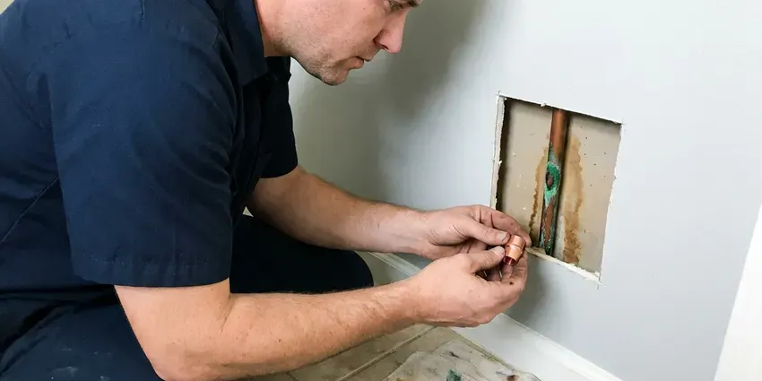

Trenchless Sewer Line Repair in Rock Springs, WY
Keep your pavers and the old shade tree. Our crew in Rock Springs, WY fixes cracked, root-filled sewer lines from small access points.
- Small Access Pits Only
- Most Jobs Done in One Day
- Quick Camera Inspections
- Cured-In-Place Pipe Lining

Sewer Line Broken in Rock Springs, WY?
We camera the line first, then price lining and bursting side by side.
Trenchless Sewer Line Repair in Rock Springs, WY
JKV Plumbing repairs damaged sewer laterals in Rock Springs using cured-in-place lining or pipe bursting, plus short point repairs for single cracks. Which one we use depends on the pipe, its material and how much shape it still holds. Most jobs need only a cleanout or one or two small access pits, so the driveway and the mature trees stay in place. Once lined, the pipe has no joints left for roots to get into.
Work we handle every week:
- Finding breaks, roots and offsets with a push camera and sonde locator.
- Cast iron descaling ahead of lining
- Cured-in-place relining for cracked or root-filled sections.

Additional Plumbing Repair Services in Rock Springs, WY
We offer expert plumbing repair services across Rock Springs, WY to stop leaks, clear blockages, and keep every fixture working the way it should.


Customers
Why Choose JKV Plumbing for Trenchless Sewer Line Repair in Rock Springs, WY?
Cutting a driveway costs you twice, first to saw and break the slab and then again to form and pour new concrete over the patch. Lining from the cleanout avoids both of those bills. For a line under concrete or pavers, trenchless is often the cheaper job once restoration is counted.
- Quick Turnaround, Most residential lining jobs are done in a single day.
- Clear Pricing, You get a written price for lining, bursting or a dig up front.
- Video Proof, You see the damage before the repair and the finished pipe afterward.
Citywide Coverage
Every neighborhood in Rock Springs is in our service area, from older blocks with clay laterals to new subdivisions built on PVC pipe. Camera trucks run across town daily. Narrow side gates and tight lots are routine work for our crews, since the lining gear rolls on a hand cart.
Experienced Team
Our plumbers train on each lining system before they run it, because every brand has its own resin mix ratios and cure times. Get the mix wrong and the liner stays soft or cures too fast. Bursting rigs are part of the training too, from setting the puller to fusing HDPE.
Safety-First Approach
Work in the public right of way, like a tap at the street main, usually needs its own permit from the city or sewer district. We file that one too. Liner resins are rated for sewer use and will not break down from household drain cleaners.
Trusted Certified Rock Springs Plumbing Services Professionals
At JKV Plumbing, we take pride in licensed, certified plumbing services throughout Rock Springs, WY. Credentials matter in this trade. Our plumbers hold recognized industry credentials, and they follow strict safety and quality rules on every repair, installation and maintenance call we run.
Call Us Now PHCC Plumbing Contractor Recognition
PHCC Plumbing Contractor Recognition Better Business Bureau (BBB) Accreditation
Better Business Bureau (BBB) Accreditation Angi Certified Pro
Angi Certified Pro ISO 9001 Quality Management Certification
ISO 9001 Quality Management CertificationSewer Relining and Pipe Bursting in Rock Springs, WY
Trenchless vs Traditional Sewer Repair Cost in Rock Springs, WY
Point repairs often cost $1,500 to $3,500, while full lining of a residential lateral often runs $4,000 to $12,000 depending on length and diameter. Pipe bursting typically ranges from $5,000 to $15,000. On a short, shallow run, a traditional dig can come in lower. Once you add back concrete and sod, the gap usually closes, and we price both options side by side so you can see the difference.

Trenchless vs Traditional Sewer Repair Costs in Rock Springs, WY
Compare total cost, not just the plumbing line on the invoice. An open-trench replacement can look cheaper on paper, until you add saw-cutting the driveway and pouring new concrete over a trench that may run 50 feet. Most of those extra costs never show up with a liner or a burst. Sod and sprinkler repair add up too.
Sectional Point Repairs in Rock Springs
A point repair is a short liner, often 3 to 5 feet long, set over one bad spot. It rides in on an inflatable packer, guided by the camera footage, and the packer inflates to press the resin-soaked sleeve against the pipe wall until it cures. It fixes a single crack or root entry, not a whole failing line. Sound lines with one bad joint are the right candidates.
Cured-In-Place Pipe Lining in Rock Springs
Prep is most of the job. We jet the line to remove roots and grease, then camera it again to measure the exact footage before cutting the liner tube to length. A poor prep job means a wrinkled liner. Lining works best on cracked or root-intruded lines that still hold their round shape.
Causes of Sewer Line Damage in Rock Springs, WY
Shifting soil is one of the main reasons sewer joints separate, crack or drop out of grade over the years. Rocky ground can make digging for sewer or water line repairs slow, and trenchless methods are sometimes a better option. Roots are the other big one, since a hairline gap at a clay joint is enough for a feeder root to get in and then swell into a mat that catches paper. Then age finishes the job. Cast iron scales and thins, and clay bells crack under load.
Emergency Trenchless Sewer Services in Rock Springs
A sudden collapse usually shows up as every drain in the house backing up at once, often into the lowest tub or floor drain. The first job is getting flow back, usually with a cable or a jetter. Then the camera shows whether the line can be lined or needs a burst. Some collapses need a small dig.
Pipe Bursting Sewer Upgrades in Rock Springs
Bursting can upsize the line. We can pull in 6-inch HDPE behind a head that bursts an old 4-inch clay pipe, which helps on lines that clog because they were undersized from the start or have been added onto with extra bathrooms. Each end only needs a pit around three by four feet. No trench in between.

Sewer Camera Inspections for Trenchless Repair in Rock Springs
Every trenchless job starts with a push camera fed in from the cleanout or a pulled toilet. The screen shows the inside of the pipe live, and a sonde in the camera head lets us mark the exact spot on the ground above it. The locator also reads depth, which matters for pit planning. No guessing where to dig.
Trenchless Sewer Repair Near Me in Rock Springs, WY
Searching for trenchless sewer line repair near me in Rock Springs, WY usually starts after the second or third backup in a month. JKV Plumbing has camera trucks working Rock Springs most days. Most of the time a crew can be on site the same day or the next morning, and the camera run takes about an hour. You see the footage before the truck pulls away.
Looking for a trenchless plumber nearby in Rock Springs, WY? It is worth asking whether they do the lining and bursting themselves or hire it out. JKV Plumbing runs its own lining crew. That means one company owns the schedule and the warranty from the camera to the final video, and it means the person who inspected your line is usually the one who repairs it.
JKV Plumbing at a Glance
- Licensed and insured plumbers serving Rock Springs, WY
- Same-day appointments and 24/7 emergency response
- Upfront, flat-rate pricing before work begins
- 4.9-star rated by 782+ Wyoming customers
Rock Springs Map
Rock Springs Information
- Population
- 22,954
- Area codes
- Local
- Service area
- Rock Springs and towns within a 40 mile drive
- Nearby
- Green River, Lander, Evanston, Rawlins
Rocky ground can make digging for sewer or water line repairs slow, and trenchless methods are sometimes a better option. Cured-in-place lining and pipe bursting let us replace a failing lateral in Rock Springs, WY from one or two small pits instead of a trench across the yard.
Talk to a Plumber
Reach out to JKV Plumbing for honest, reliable plumbing from people who know the trade in Rock Springs, WY.
Our Specialized Plumbing Services in Rock Springs, WY
At JKV Plumbing, we handle the full list of plumbing services across Rock Springs, WY. We go from leak detection all the way to full system installations, for homes and commercial buildings, and we do it quickly at a fair price. Explore our core services below:


What a Trenchless Sewer Repair Looks Like in Rock Springs, WY
Most trenchless jobs follow the same three or four steps.
Request a Quote
Call (307) 393-4049 to book a sewer camera inspection. We record the video and flag problem spots on the surface with a locator.
Review Repair Options
We go through the footage with you and explain whether lining, a point repair or bursting fits. You get a written price for each suitable option.
Repair and Verify
We clean and prep the line, finish the repair and backfill any pits. A last camera run confirms the new pipe is sound.
Frequently Asked Questions About Trenchless Sewer Line Repair in Rock Springs
Most trenchless sewer jobs in Rock Springs, WY fall between $4,000 and $15,000. The biggest factors are the length of the run and whether we line or burst. Depth, pipe diameter and how hard the pits are to reach also move the number, so a line under a driveway with only one cleanout will cost more than an open-lawn lateral of the same length.
No. A fully collapsed section, or a pipe so offset that a liner cannot pass, may need a short dig at that spot. The camera footage shows which situation you are dealing with. Sometimes it is a mix, with a small excavation at one bad section and a liner through the rest of the run to the street.
Usually, yes. Many cities require one for sewer lining or replacement, especially if the work reaches the public right of way out at the street. We take care of the permits when they apply.
Decades. Quality liners and HDPE pipe carry a 50-year design life from most manufacturers when the host pipe was cleaned and prepped right.
Repeated backups, gurgling toilets, sewage odor, soggy patches in the yard and slow drains across the whole house are the common ones. A camera inspection confirms the cause.
Yes, in most places. JKV Plumbing pulls the plumbing permit from the Rock Springs building department before work starts, and if any work reaches the public right of way we file that permit too. An inspector may also ask to see the final camera video.
Rocky ground can make digging for sewer or water line repairs slow, and trenchless methods are sometimes a better option. Soil that swells and shrinks with moisture puts stress on rigid pipe joints, which is how clay and cast iron lines crack and separate. HDPE flexes instead of breaking. A cured liner also removes the joints that tend to fail first.
Probably, if the pipe still holds its round shape. Lines with cracks or roots are usually good candidates for a liner, and so does cast iron with surface corrosion, as long as there is enough sound wall left to descale and bond to. A collapsed or badly offset line will need bursting or a spot dig.
What Our Customers Say About Our Plumbing Experts

Diane F.
My kitchen faucet had dripped for months and I finally got tired of hearing it at night. JKV Plumbing came out the next morning, replaced the cartridge and the O rings, and tightened a loose base that was letting water under the sink.
Faucet Repair · Rawlins, WY
Monica A.
Our water bill nearly doubled in one month with no change in how we used water. The tech checked the meter, heard the leak under the hallway with his equipment, and opened a hole about a foot square. Fixed the same day.
Slab Leak Repair · Green River, WY
Rachel N.
Hard water was leaving white crust on every faucet and our dishwasher was struggling. The tech tested the water, recommended a softener sized for a family of five, and installed it with a bypass valve in one afternoon. The spots on our glasses are gone.
Water Softener · Rock Springs, WY
Tyler J.
We bought a taller comfort height toilet for my dad, who just had knee surgery. The plumber pulled the old one, found the flange was cracked, and replaced it before setting the new bowl. Took about two hours.
Toilet Installation · Rock Springs, WYNathan E.
Our tankless heater kept throwing an error code and shutting off mid shower. The tech flushed the heat exchanger, which was full of scale, and replaced a bad flow sensor. Hot water has been steady for half a year now.
Water Heater Repair · Evanston, WYMegan L.
Our upstairs tub drained so slowly that every shower turned into a bath. JKV Plumbing pulled a wad of hair out of the stopper and then snaked the line past the trap. Three months later it still drains fast.
Drain Cleaning · Riverton, WY